Teacher is a user that has a teachership status to one or more organizations. Their main responsibility is to manage their organization, along with regular duties related to teaching their students.
TMC webapp is divided to several organizations, which have their own staff and courses. To start using TMC as a teacher, you must either be added to some established organization or request your own.
When logged in as a user (sign up first if you haven't already), go to url /org/new in current TMC webapp, (for example http://tmc.mooc.fi/org/new).
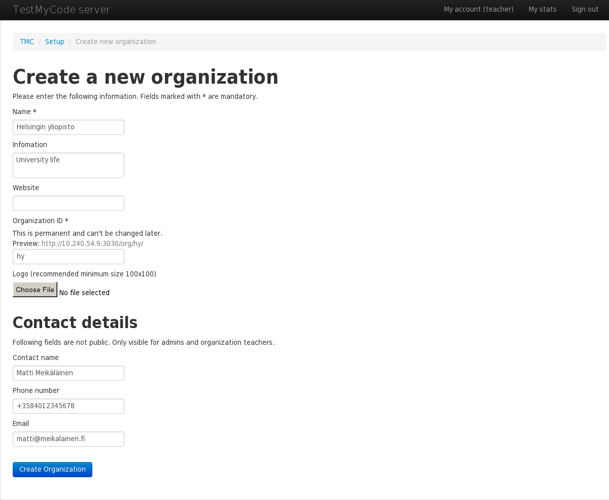You will then be presented with a form with following fields:

After sending the request, you will have to wait for TMC's administrators to accept your request. While request is pending, you may see the organization's page, but you can't do much else with it.
After your organization is accepted, you will be able to see it in the organization listing at the front page. Your own organizations are listed first separately, and accepted organizations are shown also in 'All organizations' list.
From your organization's front page, you can list all the teachers in the organization.
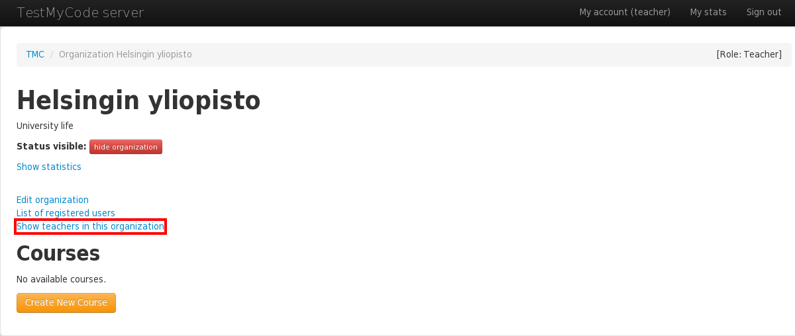When you're a teacher in some organization, you may add new teachers. To recruit a new teacher, you will have to know the teacher's username. The page form will not list available usernames. Type the username then click 'Add a new teacher'.

Added teacher will now have the same access rights for the organization as you have. You can also remove existing teachers easily.
Simplest way to create a course is to copy it from a template. You will be able to manage submission deadlines, exercise unlock conditions etc. You will not, however, be able to edit the exercise source code.
From organization's front page, click 'Create New Course'
 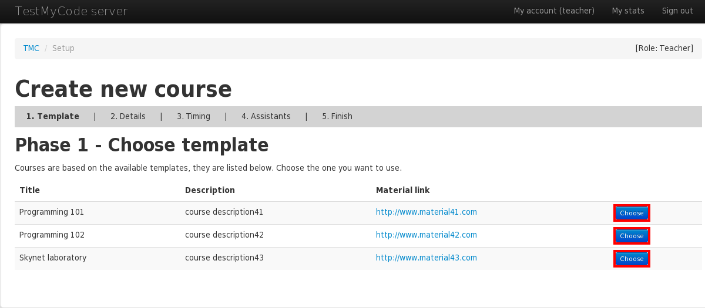
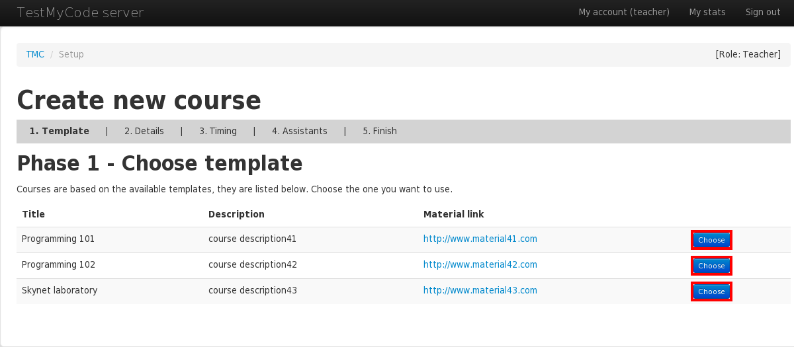
You will see a list of all the course templates TMC has to offer. Click 'Create Course' button on the template that you want.

On the following form the fields will be prefilled with template defaults. You may change these fields to suit your needs.
Click 'Add Course'. You might want to wait a while as course will fill itself with exercises downloaded via Source url.

Course should now be available for students to submit their solutions to exercises. TMC will show a help page to get you started with teaching the course. Click 'view status page' to return to course's front page.
Here you may see submissions sent to any exercises in this course, view model solutions, make code reviews etc. You may also access course page from organization's page.
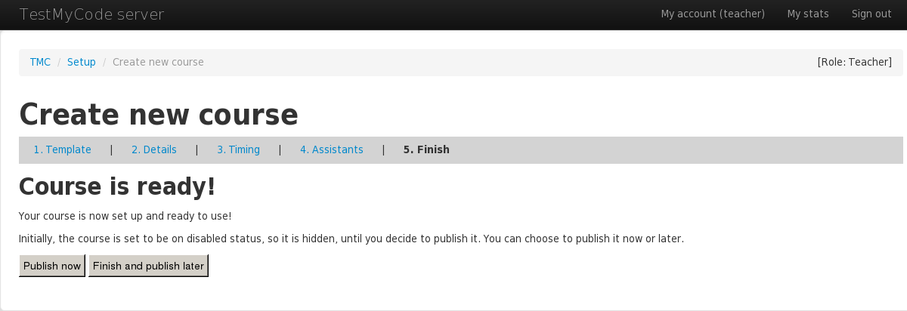
If you're so inclined, you may create your own course without a template. This guide
If you want to use an external point awarding system, you can enter its URL to the 'Custom points URL' field. You can also use a template
string that will generate the URL dynamically. For example, http://my-custom-points.io/%{user} would show as
http://my-custom-points.io/MyUsername when viewed by user MyUsername
If you want to use an external point awarding system, you can enter its URL to the 'External scoreboard URL' field. You can also use a template
string that will generate the URL dynamically. For example, http://my-points.io/%{user} would show as
http://my-points.io/MyUsername when viewed by user MyUsername
If you're so inclined, you may also create your own course without a template. This guide may prove useful to you in this case. Creating this kind of custom courses may also be disabled, based on the current TMC webapp configuration.
Created course may be disabled so that it won't accept submissions. You might want to do this if you're not satisified with your course and wish to start a new one, if you want to configure your course without worrying about students using your course, or if you want to force students to take a vacation. Disabled courses can be enabled at a later time.

Simply click 'Disable Course' link to disable course
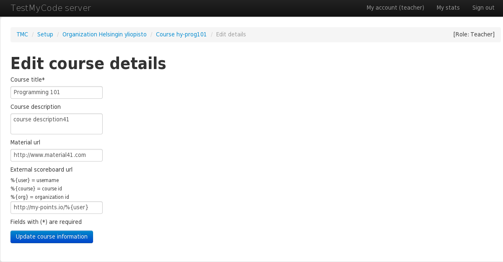Click 'Enable Course' link to enable it again
Course assistants have teacher permissions for single course, not for whole organization. You can add course assistants by going to course page and clicking 'Manage assistants' button.
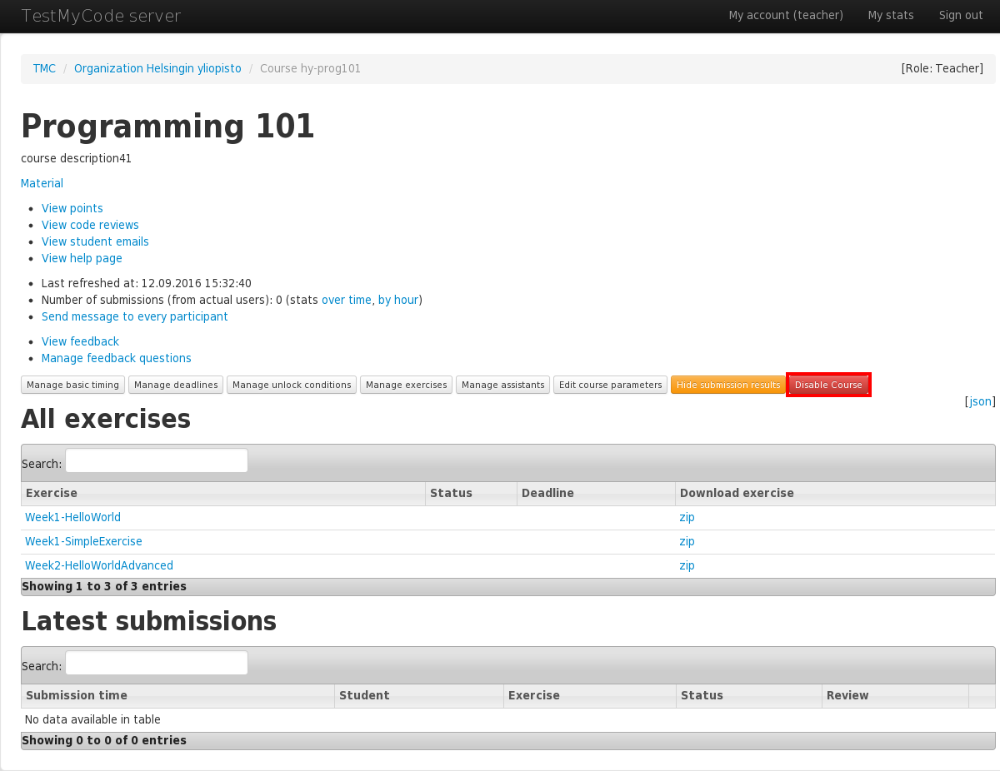Adding new course assistants works same way as adding new teacher, so you need to enter assistant's username.
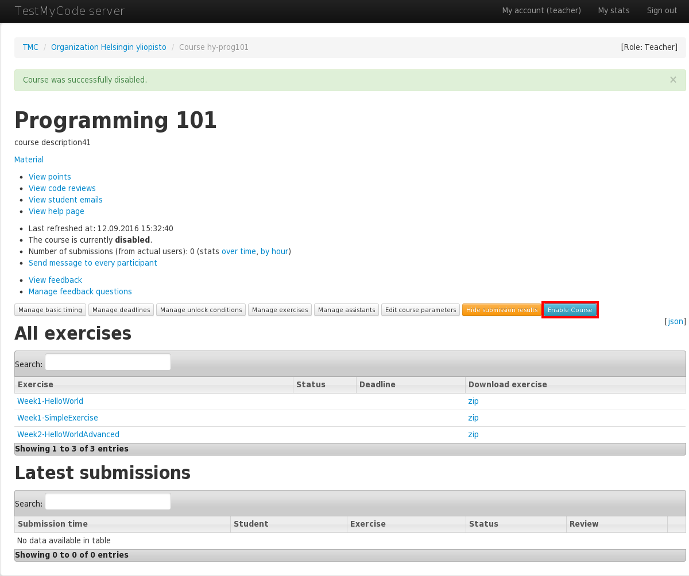To control course progression, each exercise and exercise group may be configured with deadlines and unlock conditions.
From the course's front page, click the 'Manage deadlines' button.
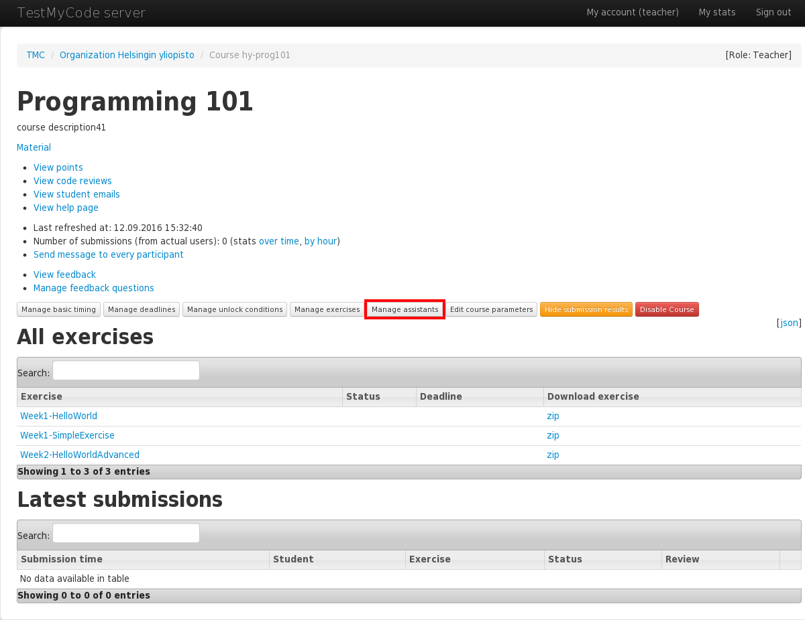
Distinction is made between hard and soft deadlines. When soft deadline is met, nothing relevant to TMC webapp happens. Soft deadlines are meant to pressure students with smaller reprecussions. When hard deadline is met, exercise will stop accepting submissions.
Common deadlines are configured by date or date-time. TMC understands multiple formats, for example:
Unlock-based deadlines will calculate unique deadlines for each student based on the time they unlocked the exercise.
For example, to give students 2 weeks to complete an exercise after it becomes available, set the deadline to
unlock + 2 weeks. Other possible values for unlock-based deadlines are
unlock + <N> [minute[s]|hour[s]|day[s]|week[s]|month[s]|year[s]].
To edit unlock-based deadlines, advanced options must be enabled by clicking the button in the top right corner of the page.
By default, the form is set to edit deadlines for all exercises in an exercise group at once. Exercises that the deadlines apply to are listed on the 'Exercises' column. If you want to edit deadlines for individual exercises, click 'Show single exercises'. This will expand the form to show all exercises in the group.

If the exercises in a group have differing deadlines, the group deadline input fields will be disabled and show 'various'.

If you want to edit the deadlines for the whole group again, you need to change the single deadlines so they all match within the group, or you can reset them by clicking 'Clear single deadlines'.

If both date-based and unlock-based deadlines are enabled for the same exercise, the one which expires first wil be used.
After creating a course from template, the deadlines may already be defined depending on the course template configuration.
If exercise or exercise group has an unlock condition attached to it and it has not passed yet, exercise will not accept submissions. Unlock conditions can be set by clicking 'Manage unlock conditions' in the course page.

Unlock conditions may be set for each exercise group separately. You can add multiple unlock conditions for the same exercise group by clicking 'Add a condition'. If multiple conditions are defined, all of them must be true before the exercise is unlocked.

The conditions that can be used are:
exercise [group] <exercise-or-group>point[s] <list-of-point-names><N>% [in|of|from] <exercise-or-group><N> point[s] <exercise-or-group><N> exercise[s] [in|of|from] <exercise-or-group><date-or-datetime>Every course can have feedback questions, which are asked after successful submission. Questions can be configured by clicking 'Manage feedback questions' from course front page.
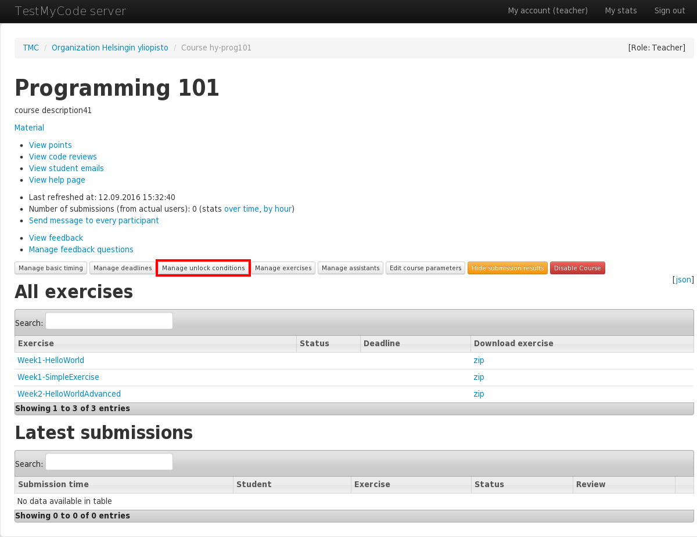New question can be added by clicking 'Add question'.

First enter the question text and shorter title, which can be shown on result view. Questions can be either free text answers or number value from selected range. If you want to create free text question, choose 'Text area' as question type.
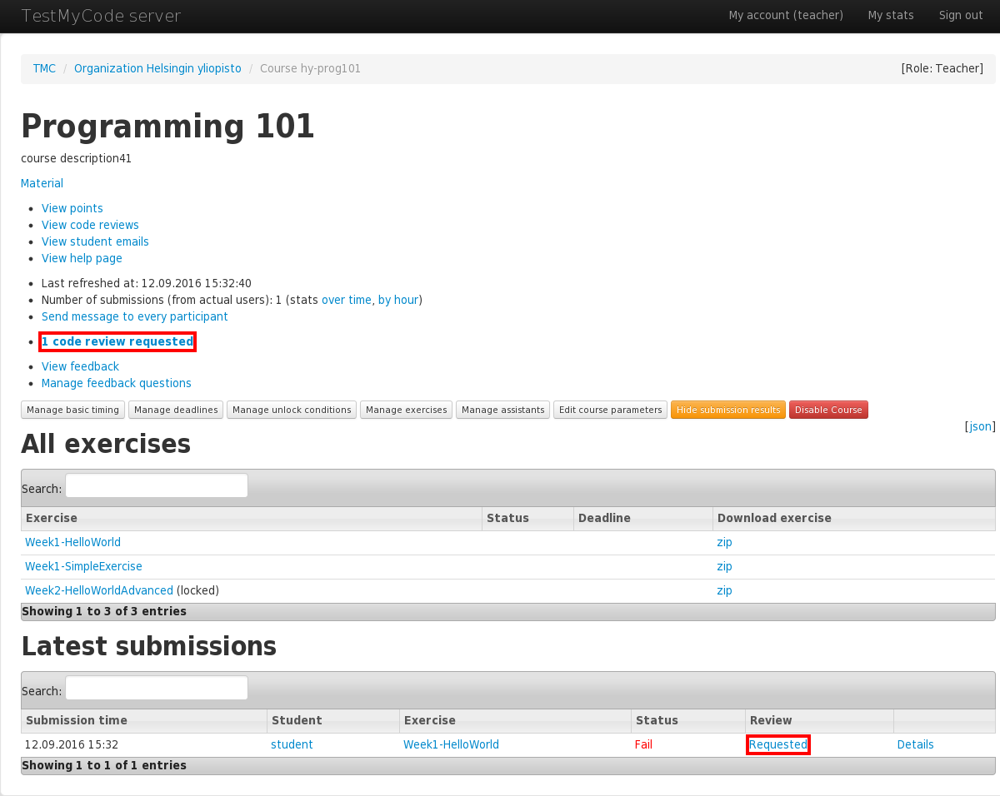If you want to create question with number valua answers, for example for statistical purposes, you can choose 'Integer range' option instead. New input fiels for minimum and maximum values are shown.
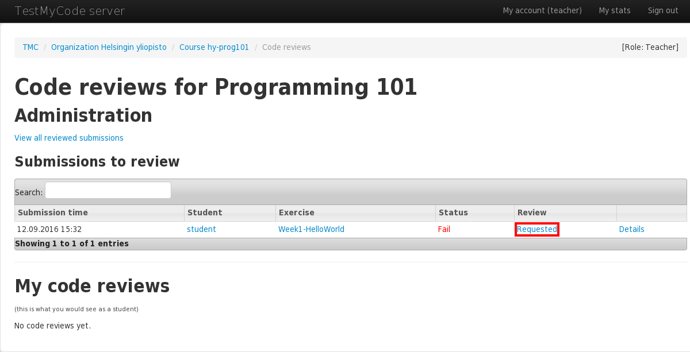When questions are made, you can adjust their order with 'Up' and 'Down' options. Question can be removed by clicking 'Delete'.

After students have answered to questions, the answers can be viewed by clicking 'View feedback' from course main page.

Some assignments require code review to be completed, and students can also request code review if they want. If there are unreviewed requests, course front page has link 'n code view requested'. You can start review process by clickin that link.
Also submission list on the bottom of the page shows individually if submission still requires review.
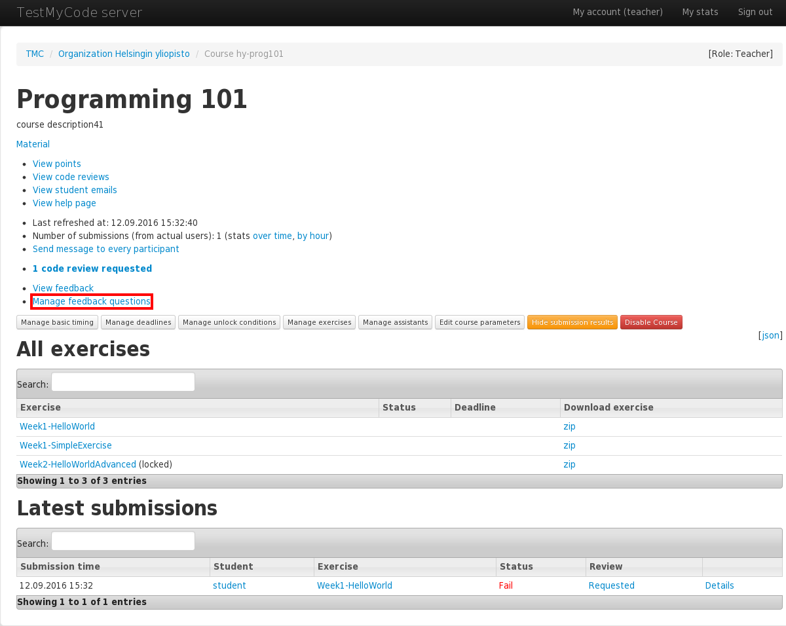Review page shows all submission which still require review. Click the 'Requested' link for the submission which you want to review.

On the actual review screen, you can see studens answer code at the bottom of the page. Showing test results can be toggled by clicking 'Test results'. When you have taken look at the code, click 'Start code review' to start writing your actual review feedback.
Write you review text in the textarea. If you want to notify the student by email, you can check 'Notify by e-mail' checkbox. When you are ready, click 'Save review', and review process is done.

Students current progress can be check from the points page. It is accessible through 'View points' link from the course front page.
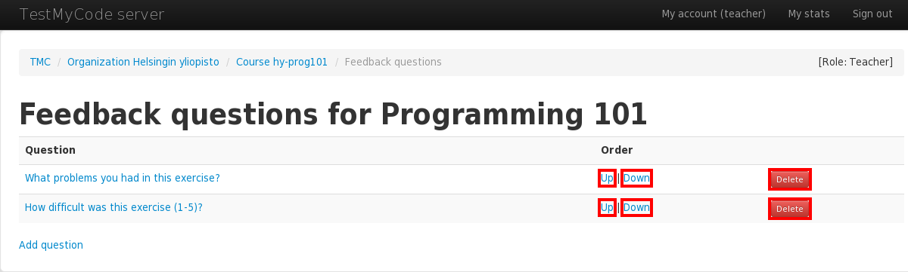This page show summary of all students and exercise groups. If you want to see single student's data, click his username.

On the student's page you can see summary of his progress in all courses, for example how many percentages of all exercises have been completed. At the bottom of the page there's list of his submission history. If you want to check some single submission data, you can click 'Details' link.
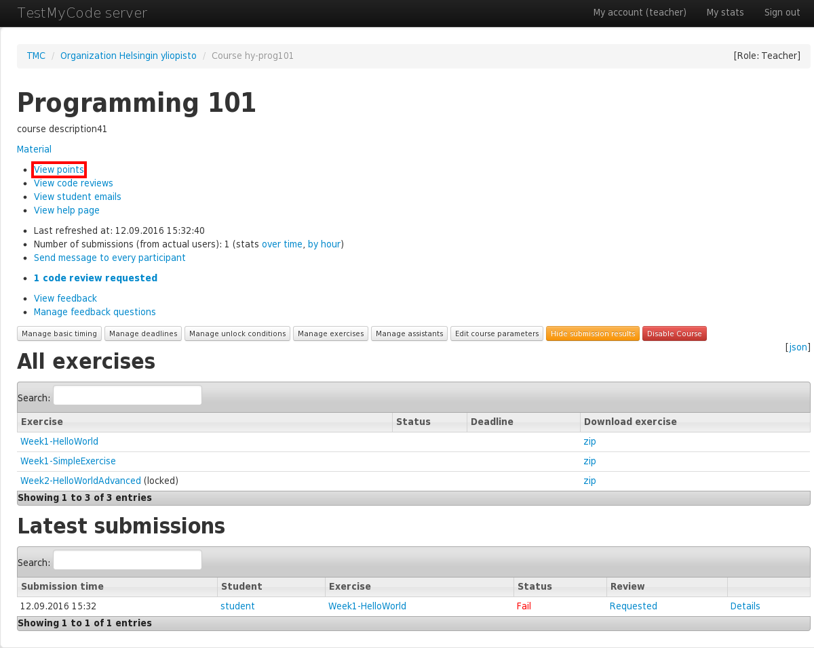On the submission details page you can see all relevant data to submission, including student's answers, test results, and suggested solution. You can also rerun submission and start code review.

From the organization front page you can view some statistics by clicking link 'Show statistics'.

Statistics page lists information about participants and completed exercises for all your organization's courses.